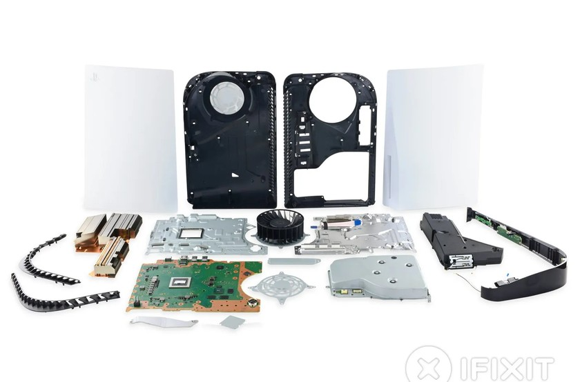

What actually changed between 2006, 2013 and 2020.

The PlayStation 3 used the Cell Broadband Engine, a processor Sony developed with IBM and Toshiba. It was very powerful, but it was also difficult for developers to work with because tasks had to be divided across several specialized cores. As a result, many studios were never able to use the processor to its full potential. The PS3 also included a Blu-ray drive when the technology was still new and expensive, which helped push the launch price to $499 for the smaller model and $599 for the larger one.
The PlayStation 4 took a much simpler approach by switching to an eight-core AMD processor that used the same x86 architecture found in many desktop computers. This made it easier for developers to use tools they were already familiar with instead of having to learn a completely different system. Along with its $399 launch price, this helped the PS4 become the best-selling console of its generation.
The PlayStation 5 kept AMD hardware but focused more on speed. Its custom SSD loaded data much faster than the PS4's hard drive, cutting down loading times and giving developers more freedom when designing games.
| Console | Released | Main Processor | Storage at Launch | Launch Price |
|---|---|---|---|---|
| PlayStation 3 | November 2006 | Cell Broadband Engine | 20 GB or 60 GB hard drive | $499 or $599 |
| PlayStation 4 | November 2013 | 8 core AMD Jaguar | 500 GB hard drive | $399 |
| PlayStation 5 | November 2020 | 8 core AMD Zen 2 | 825 GB solid state drive | $499 disc, $399 digital |